5 Méthodes déterministes d’estimation des ressources
Ce chapitre présente les principales méthodes déterministes, dites conventionnelles, utilisées pour estimer les ressources à partir d’un échantillonnage limité. Toutes reposent sur le principe d’une moyenne pondérée, mais se distinguent par la manière dont les poids sont attribués aux observations. Les méthodes des polygones, ou du plus proche voisin, des triangles, fondée sur une interpolation par triangulation, de l’inverse de la distance et des sections sont successivement étudiées. Pour chacune, le principe, les formulations mathématiques, les avantages et les limites sont présentés. Des ateliers interactifs permettent de visualiser l’application de ces méthodes à des jeux de données synthétiques en deux dimensions.
À la fin de ce chapitre, vous serez en mesure de :
Comprendre le cadre général de l’estimation par moyenne pondérée et le rôle des poids \(\lambda_i\);
Construire des polygones de Voronoï et expliquer leur lien avec la triangulation de Delaunay;
Appliquer la méthode des triangles selon différentes hypothèses de variation de la teneur et de l’épaisseur;
Estimer une teneur par la méthode de l’inverse de la distance et analyser l’effet de l’exposant \(b\);
Utiliser la validation croisée pour comparer et calibrer les méthodes d’estimation;
Appliquer la méthode des sections pour estimer le volume et la teneur d’un gisement.
5.1 Définitions
On appelle méthodes conventionnelles (ou déterministes) les méthodes d’estimation des ressources qui ne font pas appel à la géostatistique, c’est-à-dire qui ne prennent pas en compte la structure spatiale des données. Pour attribuer un poids à chaque observation, elles s’appuient uniquement sur des règles géométriques ou arithmétiques simples, telles que la distance entre le point à estimer et les données connues, ou l’aire d’influence de chaque donnée.
Leur but reste celui de toute estimation : évaluer la teneur en un point ou un bloc non échantillonné, à partir des quelques observations voisines dont on dispose. Ce sont ces teneurs estimées, calculées sur l’ensemble du modèle de blocs, qui permettront d’appliquer une teneur de coupure et de délimiter le minerai.
Estimateur linéaire
Notons \(Z(\mathbf{x}_i)\), ou plus simplement \(Z_i\), la teneur mesurée aux \(n\) points d’échantillonnage, et \(\mathbf{x}_0\) le point pour lequel on cherche à estimer une teneur inconnue. Presque toutes les méthodes, conventionnelles comme géostatistiques, donnent l’estimation de la variable d’intérêt \(Z(\mathbf{x}_0)\) (ou \(Z_0\)) sous la forme d’une combinaison linéaire des valeurs observées :
\[ Z_0^* = \sum_{i=1}^{n} \lambda_i\, Z_i, \]
où \(\lambda_i\) est le poids de l’observation \(i\). La formule est donc la même pour toutes les méthodes; ce qui change de l’une à l’autre, c’est la manière de calculer la valeur de chaque poids (\(\lambda_i \forall\, i=1,...,n\)).
Pour évaluer la qualité d’une telle estimation, on adopte un point de vue probabiliste. On ne voit plus la teneur comme un simple nombre, mais comme une variable aléatoire : à chaque position \(\mathbf{x}\) correspond une variable \(Z(\mathbf{x})\) dont la vraie valeur existe, mais qui reste cachée tant qu’on n’a pas extrait le bloc et traité celui-ci au concentrateur. Là où l’on a échantillonné, on connaît la valeur de \(Z(\mathbf{x}_i)\); en \(\mathbf{x}_0\), elle est encore inconnue, et c’est justement elle qu’on cherche à estimer. On peut alors parler de l’espérance \(\mathbb{E}[Z(\mathbf{x})]\), la valeur moyenne attendue en \(\mathbf{x}\).
Estimateur sans biais
La première exigence que l’on impose à l’estimateur est d’être sans biais : en moyenne, il ne doit ni surestimer ni sous-estimer la vraie valeur, soit \(\mathbb{E}[Z_0^*] = \mathbb{E}[Z(\mathbf{x}_0)]\). Cette exigence se traduit par une condition simple portant sur les poids.
On reprend les deux hypothèses précédentes : la teneur est une variable aléatoire et sa moyenne est constante. On suppose donc que \(Z(\mathbf{x})\) admet une espérance constante sur le domaine d’étude \(\mathcal{D}\) :
\[ \mathbb{E}[Z(\mathbf{x})] = m, \quad \forall\, \mathbf{x} \in \mathcal{D}. \]
L’espérance de l’estimateur s’écrit alors :
\[ \mathbb{E}[Z_0^*] = \mathbb{E}\!\left[ \sum_{i=1}^{n} \lambda_i Z_i \right] = \sum_{i=1}^{n} \lambda_i\, \mathbb{E}[Z_i]. \]
Comme \(\mathbb{E}[Z_i] = m\) pour tout \(i\), on obtient :
\[ \mathbb{E}[Z_0^*] = \sum_{i=1}^{n} \lambda_i\, m = m \sum_{i=1}^{n} \lambda_i. \]
Pour que l’estimateur soit sans biais, cette espérance doit égaler \(m = \mathbb{E}[Z(\mathbf{x}_0)]\), ce qui impose naturellement une contrainte sur les poids :
\[ \sum_{i=1}^{n} \lambda_i = 1. \]
Le non-biais repose ainsi sur deux conditions conjointes : la moyenne de la variable est constante (\(\mathbb{E}[Z_i] = m\) pour tout \(i\)) et la somme des poids vaut 1. On retrouve cette contrainte \(\sum_i \lambda_i = 1\) dans pratiquement toutes les méthodes d’estimation lorsque la moyenne est inconnue ou difficile à estimer à partir des données.
Ce qui distingue les méthodes
Les méthodes se distinguent par la façon dont elles fixent les poids \(\lambda_i\), qui mesurent l’influence d’une observation en \(\mathbf{x}_i\) sur l’estimation de la valeur inconnue en \(\mathbf{x}_0\).
Les méthodes conventionnelles fixent ces poids à partir de la seule géométrie des données : distances au point estimé, appartenance à un polygone ou position dans un triangle. Elles ne modélisent pas la continuité spatiale du phénomène et ignorent donc la redondance entre les points rapprochés et la structure spatiale du gisement.
Les méthodes géostatistiques procèdent autrement : les poids sont calculés à partir d’un modèle statistique spatial, qui décrit comment les teneurs se ressemblent selon la distance et la direction, afin de minimiser la variance de l’erreur d’estimation. En d’autres termes, on impose un modèle statistique aux données et on l’utilise pour optimiser les poids de sorte que l’erreur soit toujours la plus faible possible, au sens de la variance.
Pour le moment, nous allons présenter en détail les méthodes d’estimation conventionnelles encore largement utilisées dans les rapports techniques miniers NI-43-101 lors des phases d’exploration préliminaire, en raison de leur rapidité d’implémentation et de leur simplicité.
5.2 Méthode des polygones (plus proche voisin)
Principe
La méthode des polygones attribue à chaque point d’échantillonnage une zone d’influence constituée de l’ensemble des points du plan qui lui sont plus proches qu’à tout autre échantillon. Ces zones forment un pavage du plan appelé diagramme de Voronoï (ou polygones de Thiessen).
La teneur estimée est constante à l’intérieur de chaque polygone et égale à la teneur mesurée au point d’échantillonnage correspondant. Le volume associé à un polygone est le produit de sa surface par l’épaisseur de la veine mesurée au point d’échantillonnage situé dans ce polygone.
Construction des polygones de Voronoï
La construction la plus courante procède en deux étapes :
Triangulation de Delaunay. On relie les points d’échantillonnage en triangles de manière à maximiser les angles minimaux (triangles aussi équilatéraux que possible). Une triangulation de Delaunay est unique et se caractérise par la propriété suivante : le cercle circonscrit à chaque triangle ne contient aucun autre point d’échantillonnage. Des algorithmes très efficaces permettent de construire cette triangulation en quelques secondes, même pour plusieurs milliers de points. Ce critère du cercle circonscrit vide, qui garantit des triangles aussi équilatéraux que possible, est illustré à la Figure 5.1.
Polygones de Voronoï. Les polygones sont construits comme le dual de la triangulation de Delaunay. Pour chaque arête de la triangulation, on trace la médiatrice (perpendiculaire passant par le point médian du segment). Les intersections de ces médiatrices définissent les sommets des polygones. Chaque polygone entoure un point d’échantillonnage et contient tous les points du plan qui lui sont plus proches qu’à tout autre échantillon. La Figure 5.2 illustre l’ensemble de la construction, de la triangulation aux zones d’influence colorées par la teneur du plus proche voisin.
Dualité Delaunay–Voronoï. Deux points d’échantillonnage sont voisins de Voronoï (leurs polygones partagent une arête) si et seulement s’ils sont reliés par une arête dans la triangulation de Delaunay. Les sommets des polygones de Voronoï correspondent aux centres des cercles circonscrits aux triangles de Delaunay.
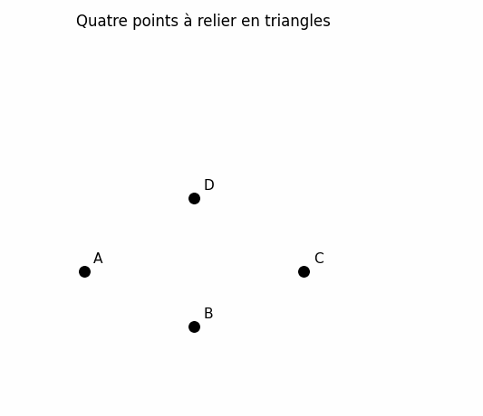
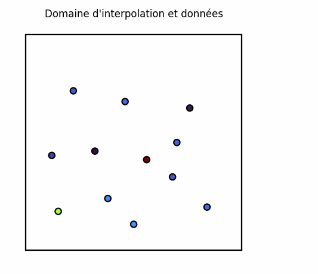
Poids d’estimation
Dans cette méthode, pour l’estimation d’un point \(\mathbf{x}_0\) situé dans le polygone associé au point \(\mathbf{x}_i\) :
\[ \lambda_i = 1, \quad \lambda_j = 0 \quad \text{pour tout } j \neq i \]
L’estimation est donc simplement \(Z_0^* = Z_i\) : la valeur du plus proche voisin.
Propriétés importantes
L’influence d’un échantillon s’étend sur tout son polygone de Voronoï et s’annule à la frontière du polygone, c’est-à-dire à l’intersection des médiatrices des segments reliant les échantillons voisins. L’étendue de cette zone d’influence ne dépend que du patron d’échantillonnage, et non des valeurs observées.
Les échantillons situés en bordure du domaine sont plus délicats à traiter. Comme ils ne sont pas entourés d’autres échantillons, leur polygone ne se ferme pas naturellement. Il faut donc imposer une limite, soit avec une distance maximale d’influence, soit avec une limite géologique lorsque celle-ci est connue.
Ce choix peut influencer le résultat. Si la limite est trop éloignée, un échantillon isolé peut recevoir trop de poids et faire varier le tonnage estimé en bordure du gisement. La Figure 5.3 illustre cet effet : pour un même jeu de données, la cellule du point de bordure (contour noir épais) s’étend et son poids augmente fortement lorsque la frontière s’éloigne.
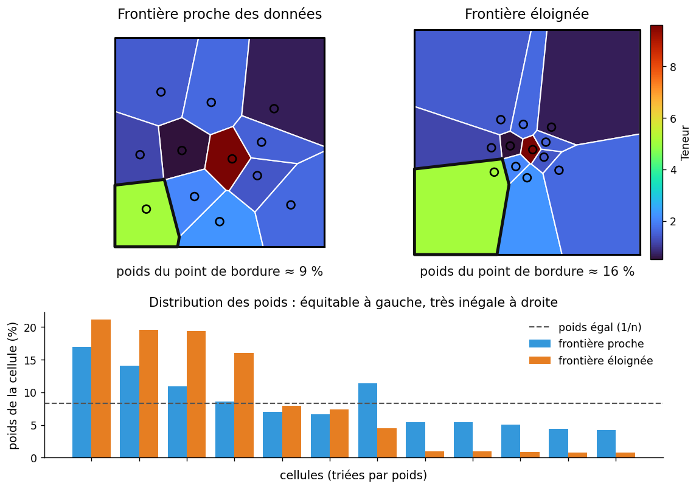
Avantages et limites
Avantages: La méthode des polygones est simple à mettre en œuvre et à interpréter, et ne demande aucun paramètre à ajuster. Elle donne des résultats satisfaisants pour des minéralisations continues, à variation graduelle, ainsi que pour des échantillonnages denses et réguliers. Elle est particulièrement utile pour des estimations préliminaires rapides, y compris sur des données irrégulières : le tonnage s’obtient alors en sommant les aires des polygones, multipliées par l’épaisseur et la densité. Pour ces mêmes raisons de simplicité et d’efficacité, elle est très employée en environnement et pour l’estimation des sols contaminés, où elle permet de délimiter rapidement les zones à traiter.
Limitations: Ses limites tiennent surtout à sa nature purement géométrique. L’estimation est discontinue aux frontières des polygones : un léger déplacement du point estimé peut faire basculer brusquement la valeur. Elle génère aussi un fort biais conditionnel, la qualité de l’estimation dépendant à la fois de la position des observations et des valeurs mesurées. Surtout, elle néglige l’effet de support : la distribution des valeurs estimées reste semblable à celle des valeurs ponctuelles observées, alors qu’un bloc minier, de volume fini, varie moins qu’un échantillon ponctuel — un écart que la géostatistique corrige (chapitre 6). Enfin, les données redondantes, proches les unes des autres, ne sont pas dépondérées : leur zone d’influence individuelle est réduite, mais la redondance d’information qu’elles portent n’est pas explicitement pénalisée.
🧮 Atelier interactif 5.1 — Polygones de Thiessen (Voronoï)
Cliquez sur le canevas pour placer des points d’échantillonnage. Chaque point se voit attribuer une teneur aléatoire et une zone d’influence (polygone de Voronoï). Basculez entre la vue polygones, la triangulation de Delaunay, ou les deux superposées.
5.3 Méthode des triangles
Principe
Avec la méthode des triangles, on relie les points d’échantillonnage trois par trois pour découper le domaine en triangles. La teneur à l’intérieur d’un triangle est ensuite calculée à partir des teneurs mesurées aux trois sommets.
Chaque triangle représente aussi un volume. On peut le voir comme un prisme triangulaire, dont la base est le triangle et dont l’épaisseur est définie à partir des valeurs observées aux sommets.
Construction de la triangulation
Tout comme la méthode des polygones, la triangulation de Delaunay est la méthode de référence pour construire les triangles. Elle est unique et produit les triangles les plus équilatéraux possibles, ce qui améliore la qualité de l’interpolation. Rappelons qu’une triangulation de Delaunay est obtenue lorsque le cercle circonscrit à chaque triangle ne contient aucun autre point d’échantillonnage.
Dans certains cas, on peut choisir de tracer les triangles parallèlement à la direction de continuité de la minéralisation, lorsque celle-ci est connue. Ainsi, on adapte la création des triangles en fonction de la géologie.
Calcul de la teneur moyenne du triangle
Notons \(t_i\) la teneur et \(w_i\) l’épaisseur (ou, si la densité varie, le produit épaisseur × densité) au sommet \(i\) du triangle (\(i = 1, 2, 3\)). Chaque sommet porte ainsi une teneur et une épaisseur : le triangle définit un prisme dont la hauteur varie d’un sommet à l’autre (Figure 5.4).
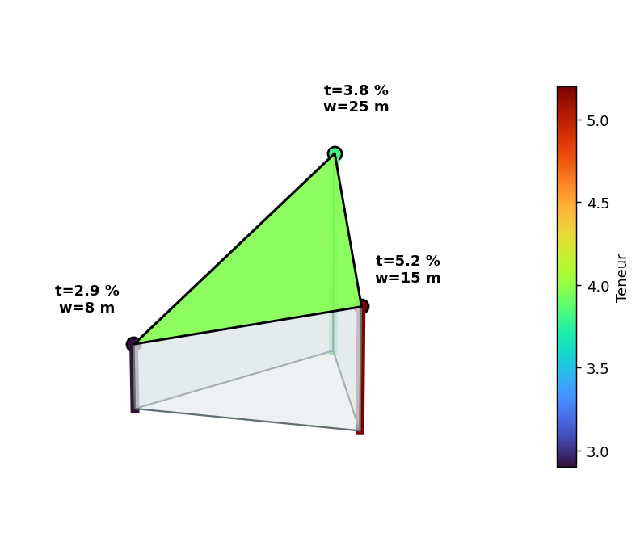
La teneur moyenne du prisme est le rapport entre le métal qu’il contient et son volume :
\[ \bar t = \frac{\displaystyle\int_T t\,w\,\mathrm{d}A}{\displaystyle\int_T w\,\mathrm{d}A} = \frac{\text{métal total}}{\text{volume total}}. \]
Le numérateur intègre l’accumulation \(t\,w\) (le métal par unité de surface), le dénominateur l’épaisseur \(w\). Le résultat dépend donc de la façon dont on suppose que la teneur et l’épaisseur varient dans le triangle. Deux hypothèses sont couramment retenues, d’où deux méthodes.
Méthode 1 : Moyenne pondérée par l’épaisseur
Hypothèse : l’épaisseur \(w\) et l’accumulation \(a = t \cdot w\) varient toutes deux linéairement entre les sommets du triangle. Autrement dit, la teneur en un point du triangle dépend à la fois de l’épaisseur de la veine (ou de l’unité géologique) et de la quantité totale de métal accumulée jusqu’à cette localisation.
Sous cette hypothèse, le volume du prisme est égal à l’aire du triangle \(A\) multipliée par l’épaisseur moyenne :
\[ V = A \times \frac{w_1 + w_2 + w_3}{3} \]
L’intégrale de l’accumulation \(t \cdot w\) sur le triangle vaut \(A \times \frac{t_1 w_1 + t_2 w_2 + t_3 w_3}{3}\), de sorte que la teneur moyenne est :
\[ \bar{t} = \frac{\displaystyle\sum_{i=1}^{3} t_i \, w_i}{\displaystyle\sum_{i=1}^{3} w_i} \]
Les poids implicites sont :
\[ \lambda_i = \frac{w_i}{\displaystyle\sum_{j=1}^{3} w_j}, \quad i = 1, 2, 3 \]
Remarque. La teneur estimée par cette formule est la teneur moyenne sur l’ensemble du triangle, et non la teneur en un point particulier.
Méthode 2 : Méthode des « % »
Hypothèse : la teneur \(t\) et l’épaisseur \(w\) varient toutes deux linéairement entre les sommets (mais leur produit \(t \cdot w\) n’est pas linéaire).
L’intégrale du produit de deux fonctions linéaires sur un triangle donne :
\[ \int_T t \cdot w \, dA = \frac{A}{12} \left[ \left(\sum_{i=1}^{3} t_i\right)\left(\sum_{i=1}^{3} w_i\right) + \sum_{i=1}^{3} t_i w_i \right] \]
En divisant par le volume \(V = A \times \frac{\sum w_i}{3}\), on obtient la teneur moyenne :
\[ \bar{t} = \frac{\left(\displaystyle\sum_{i=1}^{3} t_i\right) + \dfrac{\displaystyle\sum_{i=1}^{3} t_i w_i}{\displaystyle\sum_{i=1}^{3} w_i}}{4} \]
Le numérateur se lit comme la somme des trois teneurs brutes plus la moyenne pondérée par l’épaisseur, le tout divisé par 4 (soit \(3 + 1\)). Les poids implicites sur les teneurs sont :
\[ \lambda_i = \frac{1}{4} + \frac{w_i}{4\displaystyle\sum_{j=1}^{3} w_j}, \quad i = 1, 2, 3 \]
On vérifie que \(\sum \lambda_i = \frac{3}{4} + \frac{1}{4} = 1\).
Remarque. Comme pour la méthode 1, cette formule donne la teneur moyenne sur tout le triangle, et non en un point particulier. Elle diffère de la méthode 1 lorsque l’épaisseur varie entre les sommets : la méthode 1 suppose que le produit \(t \cdot w\) est linéaire (ce qui n’est pas le cas si \(t\) et \(w\) sont chacun linéaires), tandis que la méthode 2 est exacte sous l’hypothèse de linéarité séparée de \(t\) et \(w\).
Exemple numérique
Trois sommets d’un triangle présentent les données suivantes :
| Sommet | Teneur \(t_i\) | Épaisseur \(w_i\) |
|---|---|---|
| 1 | 2,9 % | 8 m |
| 2 | 5,2 % | 15 m |
| 3 | 3,8 % | 25 m |
Moyenne arithmétique simple : \((2{,}9 + 5{,}2 + 3{,}8)/3 = 3{,}97\) %
Épaisseur moyenne : \((8 + 15 + 25)/3 = 16\) m
Méthode 1 (moyenne pondérée) :
\[ \bar{t} = \frac{2{,}9 \times 8 + 5{,}2 \times 15 + 3{,}8 \times 25}{8 + 15 + 25} = \frac{23{,}2 + 78{,}0 + 95{,}0}{48} = 4{,}09\,\% \]
Méthode 2 (méthode des %) :
\[ \bar{t} = \frac{(2{,}9 + 5{,}2 + 3{,}8) + 4{,}09}{4} = \frac{11{,}9 + 4{,}09}{4} = 4{,}00\,\% \]
On observe que les trois estimations — moyenne simple, méthode 1 et méthode 2 — diffèrent légèrement. L’écart provient de la variation d’épaisseur entre les sommets : les sommets épais (25 m) reçoivent un poids plus élevé dans la méthode pondérée, favorisant la teneur du sommet 3.
Interpolation ponctuelle par coordonnées barycentriques
Si l’on souhaite estimer la teneur en un point particulier \(\mathbf{x}\) situé à l’intérieur d’un triangle (et non la moyenne sur le triangle), on utilise les coordonnées barycentriques \(\lambda_1\), \(\lambda_2\) et \(\lambda_3\) du point par rapport aux trois sommets. La teneur interpolée s’écrit alors :
\[ t(\mathbf{x}) = \lambda_1 t_1 + \lambda_2 t_2 + \lambda_3 t_3 \]
avec :
\[ \lambda_1 + \lambda_2 + \lambda_3 = 1 \qquad \text{et} \qquad \lambda_i \geq 0 \]
si le point \(\mathbf{x}\) est situé à l’intérieur du triangle.
Calcul des coordonnées barycentriques
Soient les sommets du triangle \(\mathbf{x}_1 = (x_1, y_1)\), \(\mathbf{x}_2 = (x_2, y_2)\) et \(\mathbf{x}_3 = (x_3, y_3)\), et un point \(\mathbf{x} = (x, y)\). Les coordonnées barycentriques sont données par :
\[ \lambda_1 = \frac{ (y_2 - y_3)(x - x_3) + (x_3 - x_2)(y - y_3) }{ (y_2 - y_3)(x_1 - x_3) + (x_3 - x_2)(y_1 - y_3) } \]
\[ \lambda_2 = \frac{ (y_3 - y_1)(x - x_3) + (x_1 - x_3)(y - y_3) }{ (y_2 - y_3)(x_1 - x_3) + (x_3 - x_2)(y_1 - y_3) } \]
\[ \lambda_3 = 1 - \lambda_1 - \lambda_2 \]
Ces coefficients représentent les poids relatifs des trois sommets dans l’interpolation du point considéré.
Cette interpolation est linéaire à l’intérieur de chaque triangle et assure la continuité aux arêtes partagées entre triangles adjacents.
On peut aussi la voir comme une double interpolation linéaire (Figure 5.5). Pour estimer la teneur au point \(P\), on interpole d’abord linéairement le long du côté \(B\)–\(C\) afin d’obtenir la teneur au point \(D\), où la droite \(A\)–\(P\) coupe ce côté, puis on interpole une seconde fois le long de \(A\)–\(D\), entre la teneur de \(A\) et celle de \(D\). Le résultat est identique à la formule barycentrique.
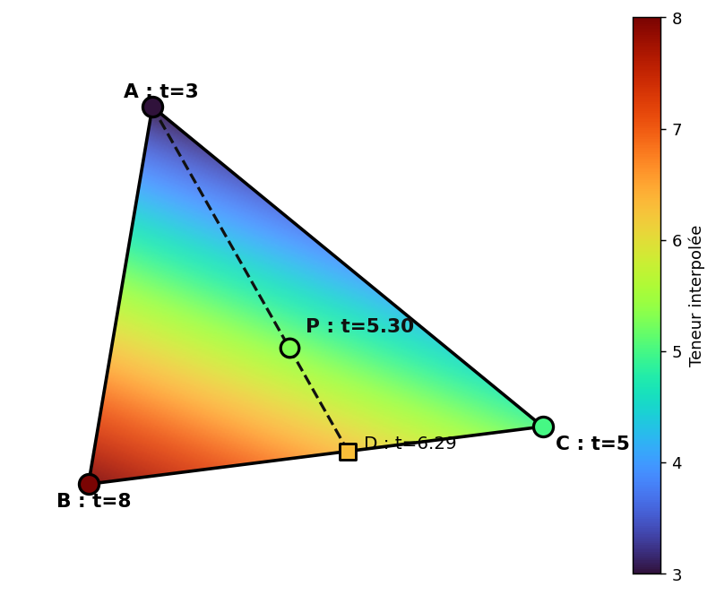
🧮 Atelier interactif 5.2 — Méthode des triangles (TIN)
Placez des points et observez la triangulation de Delaunay. Comparez la teneur moyenne par triangle avec l’interpolation barycentrique continue. Survolez un triangle pour voir les poids et la teneur interpolée.
5.4 Méthode de l’inverse de la distance
Principe
Dans cette méthode, on estime la valeur en un point \(\mathbf{x}_0\) à partir des observations voisines. L’idée est simple : plus une observation est proche du point à estimer, plus elle reçoit un poids important. À l’inverse, une observation éloignée aura moins d’influence.
L’estimation s’écrit :
\[ Z_0^* = \frac{\displaystyle\sum_{i=1}^{n} \dfrac{Z_i}{d_i^b}}{\displaystyle\sum_{i=1}^{n} \dfrac{1}{d_i^b}} = \sum_{i=1}^{n} \lambda_i Z_i \]
où \(d_i = |\mathbf{x}_i - \mathbf{x}_0|\) est la distance entre l’observation \(\mathbf{x}_i\) et le point à estimer \(\mathbf{x}_0\). Le paramètre \(b \geq 0\) contrôle l’importance donnée à la distance. Plus \(b\) est grand, plus les points proches dominent l’estimation.
Les poids normalisés sont donnés par :
\[ \lambda_i = \frac{1/d_i^b}{\displaystyle\sum_{j=1}^{n} 1/d_j^b} \]
Ces poids somment à 1, ce qui permet d’écrire l’estimation comme une moyenne pondérée des observations.
Lorsque le point à estimer correspond exactement à une donnée, la distance devient nulle. Cette donnée prend alors tout le poids dans le calcul, et l’estimation devient simplement la valeur observée. Pour éviter qu’un point très proche domine complètement les autres, certaines implémentations ajoutent une petite constante à la distance.
Rôle de l’exposant \(b\)
Le choix de l’exposant contrôle la rapidité avec laquelle l’influence d’une observation décroît avec la distance :
- \(b = 0\) : tous les poids sont égaux → l’estimation est la moyenne arithmétique de toutes les données.
- \(b = 1\) : décroissance linéaire de l’influence. Surface assez lisse.
- \(b = 2\) : choix classique, offrant un bon compromis entre fidélité locale et lissage.
- \(b\) élevé (\(b > 3\)) : les points très proches dominent fortement l’estimation, créant des « plateaux » autour de chaque donnée avec un effet dit « d’œil de bœuf ».
- \(b \to \infty\) : l’estimation converge vers la valeur du plus proche voisin, c’est-à-dire la méthode des polygones.
La Figure 5.6 illustre ces comportements sur un même jeu de données.
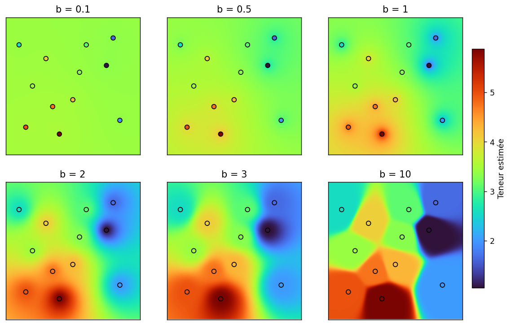
Exemple numérique
On dispose de 5 observations autour d’un point \(\mathbf{x}_0\) à estimer :
| Observation | Distance \(d_i\) (m) | Teneur \(t_i\) (%) |
|---|---|---|
| 1 | 40 | 1,0 |
| 2 | 40 | 1,0 |
| 3 | 30 | 1,5 |
| 4 | 35 | 1,5 |
| 5 | 20 | 3,0 |
Avec \(b = 2\) :
\[ Z_0^* = \frac{1{,}0/40^2 + 1{,}0/40^2 + 1{,}5/30^2 + 1{,}5/35^2 + 3{,}0/20^2}{1/40^2 + 1/40^2 + 1/30^2 + 1/35^2 + 1/20^2} = 2{,}05\,\% \]
L’observation 5, la plus proche (\(d_5 = 20\) m) et la plus riche (\(t_5 = 3{,}0\) %), domine l’estimation avec un poids \(\lambda_5 \approx 0{,}44\). Les deux observations les plus éloignées (\(d_1 = d_2 = 40\) m) reçoivent à l’inverse le poids le plus faible, \(\lambda_1 = \lambda_2 \approx 0{,}11\) chacune.
Paramètres d’ajustement
On peut raffiner la méthode par les ajustements suivants :
(1) Distance maximale de recherche. Puisque l’influence d’un point devient négligeable à grande distance, on peut exclure les observations situées au-delà d’un rayon maximal. Cela accélère les calculs et évite d’inclure des données non pertinentes. La Figure 5.7 illustre ce principe.
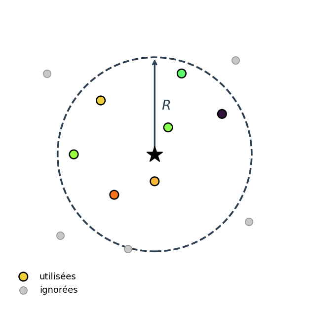
(2) Anisotropie géométrique. Si la minéralisation présente une direction de continuité préférentielle, on peut utiliser une distance anisotrope. En 2D, après rotation du système de coordonnées pour aligner les axes avec les directions principales de la minéralisation :
\[ d = \sqrt{\Delta x^2 + r^2 \, \Delta y^2} \]
où \(r\) est le rapport d’anisotropie (rapport de la portée dans la direction de faible continuité sur la portée dans la direction de forte continuité). Lorsque \(r = 1\), on retrouve la distance isotrope. Lorsque \(r > 1\), les observations situées dans la direction \(y\) sont perçues comme plus éloignées, réduisant leur influence. La généralisation en 3D est directe. L’effet est illustré à la Figure 5.8.
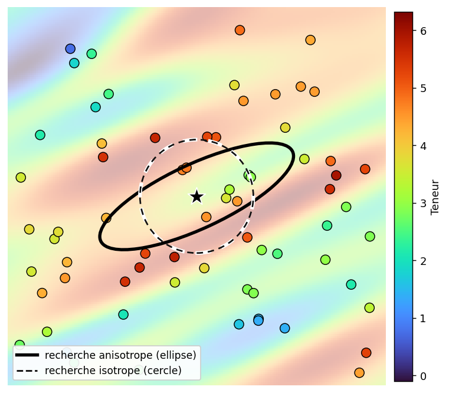
(3) Choix de l’exposant. Le choix de \(b\) est habituellement guidé par les connaissances géologiques du gisement (degré de continuité spatiale) et peut être optimisé par validation croisée.
Estimation de blocs
La méthode de l’inverse de la distance est d’abord une méthode d’estimation ponctuelle. Si on veut estimer un bloc, il faut donc représenter ce bloc par plusieurs points. On estime chacun de ces points, puis on prend la moyenne des valeurs obtenues. Cette moyenne donne ensuite l’estimation du bloc.
Validation croisée
La validation croisée permet de tester la méthode avec les données déjà disponibles (Figure 5.9). On prend une donnée connue, on la met temporairement de côté, puis on essaie de la retrouver avec les autres données. On répète ensuite l’opération pour chaque point.
Pour chaque position \(\mathbf{x}_i\), on compare donc la valeur mesurée \(Z_i\) avec la valeur estimée \(Z_i^*\) obtenue sans utiliser cette donnée. Les erreurs de validation croisée sont alors :
\[ e_i = Z_i - Z_i^* \]
et on calcule des statistiques sur ces erreurs : moyenne (qui doit être proche de 0), variance (la plus faible possible), etc. On peut répéter le processus en modifiant les paramètres de la méthode (exposant \(b\), rayon de recherche, anisotropie) et retenir la configuration qui donne les meilleures statistiques d’erreur.
Ce principe de validation croisée s’applique à toutes les méthodes d’estimation, y compris les méthodes géostatistiques.
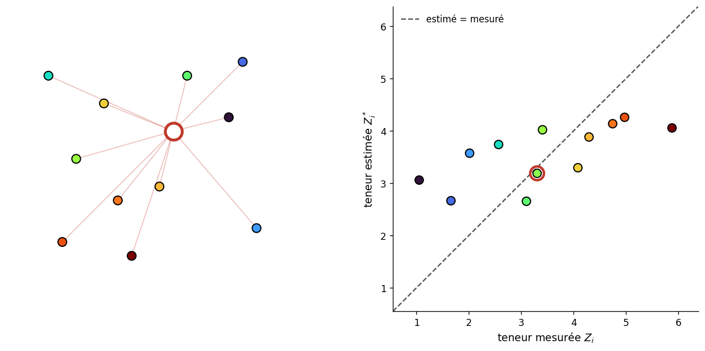
Limites de la méthode
- Effet d’œil de bœuf. L’IDW produit des artefacts circulaires (ou elliptiques en présence d’anisotropie) autour de chaque point de données, particulièrement visibles pour les valeurs élevées de \(b\).
- Pas de prise en compte de la configuration spatiale. Deux observations proches l’une de l’autre fournissent une information redondante, mais l’IDW ne les dépondère pas : chacune reçoit un poids qui ne dépend que de sa distance au point à estimer, indépendamment de la présence des autres observations. Le krigeage, en revanche, tient compte de cette redondance.
- Pas de mesure d’incertitude. L’IDW ne fournit pas directement une variance d’estimation. (Note : il serait possible d’en calculer une, mais cela nécessiterait de modéliser la fonction de covariance des données ou le variogramme, ce que nous verrons ultérieurement.)
Note pratique. Un survol des études de faisabilité récentes déposées sur SEDAR indique que le krigeage ordinaire et l’inverse de la distance sont de loin les méthodes les plus utilisées pour l’estimation des ressources.
🧮 Atelier interactif 5.3 — Inverse de la distance (IDW)
Placez des points et ajustez l’exposant \(b\) pour observer son effet sur la surface interpolée. Avec \(b = 0\), on obtient la moyenne arithmétique; avec \(b\) élevé, on s’approche du plus proche voisin.
5.5 La méthode des sections
La méthode des sections consiste à découper le gisement en une série de sections, souvent parallèles entre elles. Sur chaque section, on délimite les zones de minerai, puis on estime le volume total à partir des surfaces obtenues et des distances entre les sections.
Cette méthode est surtout utilisée pour des gisements qui se suivent bien dans une direction, par exemple des veines ou des lentilles. Les sections sont généralement tracées perpendiculairement à la direction principale du corps minéralisé.
Approche moderne
Pour ce type de gisements, les logiciels modernes de calcul des ressources procèdent habituellement en trois étapes :
- Un modèle de blocs du gisement est construit à l’aide d’une méthode d’interpolation (inverse de la distance ou krigeage).
- Un solide est construit à partir des teneurs mesurées sur les carottes, d’une teneur de coupure spécifiée et de l’interprétation géologique.
- Le modèle de blocs est intersecté avec le solide, et la teneur pour l’ensemble du solide est la moyenne des blocs contenus dans l’enveloppe.
Remarque. Anciennement, les teneurs des forages servaient à estimer directement les teneurs des surfaces, lesquelles servaient ensuite à estimer les teneurs des volumes. Aujourd’hui, on préfère découper le volume en blocs et l’estimer par géostatistique ou par l’inverse de la distance.
Modélisation explicite et implicite
La méthode des sections est l’exemple type de la modélisation explicite : le géologue interprète et digitalise à la main les contours de la minéralisation sur chaque coupe, puis le logiciel relie ces contours pour former les solides. Cette approche laisse un contrôle total à l’interprète et intègre facilement sa connaissance géologique, mais elle est longue, en partie subjective, et doit être largement refaite chaque fois que de nouvelles données arrivent.
La modélisation implicite procède autrement : la limite de la minéralisation n’est plus dessinée, mais définie par une fonction mathématique — un champ scalaire ajusté aux données, souvent par fonctions de base radiale. Les surfaces sont ensuite extraites comme des iso-contours de ce champ (Figure 5.10). Cette approche est plus rapide, reproductible et se met à jour automatiquement lorsqu’on ajoute des forages, au prix d’un contrôle manuel moins direct. Elle s’est largement répandue avec des logiciels comme Leapfrog et permet de construire directement des modèles géologiques 3D (Figure 5.11).
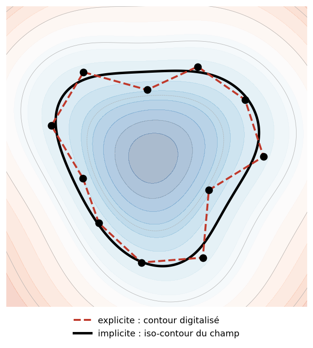
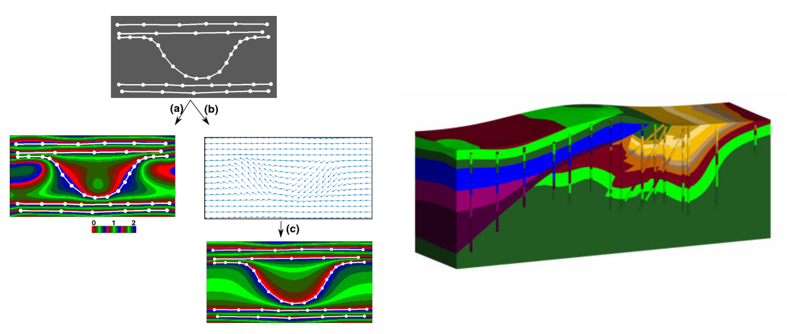
En pratique, les deux approches sont complémentaires : la modélisation implicite fournit rapidement une première enveloppe, que le géologue ajuste ensuite explicitement là où l’interprétation l’exige.
Construction des solides
La construction des solides s’effectue selon les étapes suivantes.
Étape 1 : Zones minéralisées par forage
Pour une section donnée, on représente la trace des forages dans celle-ci. On spécifie habituellement une distance de tolérance, de part et d’autre de la section, pour considérer qu’un forage ou une partie de forage appartient à la section. Chaque analyse est représentée le long du forage, et on détermine les portions situées au-dessus de la teneur de coupure.
Étape 2 : Surfaces minéralisées par section
On superpose la géologie connue (lorsque disponible). En considérant la géologie et l’ensemble des portions de forage au-dessus de la teneur de coupure, on délimite une ou plusieurs surfaces minéralisées pour chaque section. On évite de créer des surfaces trop petites qui ne pourraient pas être exploitées. Dans la construction des surfaces, on évite d’extrapoler à des distances trop grandes par rapport aux forages, surtout lors de la fermeture de la surface, là où il n’y a pas de forages pour guider l’interprétation.
Étape 3 : Construction des volumes
Les logiciels construisent des solides en 3D à partir des polygones délimitant les surfaces minéralisées sur chaque section (Figure 5.12) :
- Chaque polygone est discrétisé en une série de points.
- Deux polygones de sections voisines sont joints par des triangles afin de fermer le vide entre les sections. Le solide est délimité par un ensemble de facettes triangulaires.
- Les sections de bout constituent un cas particulier : l’utilisateur doit fournir un point ou une surface de fermeture pour chaque extrémité.
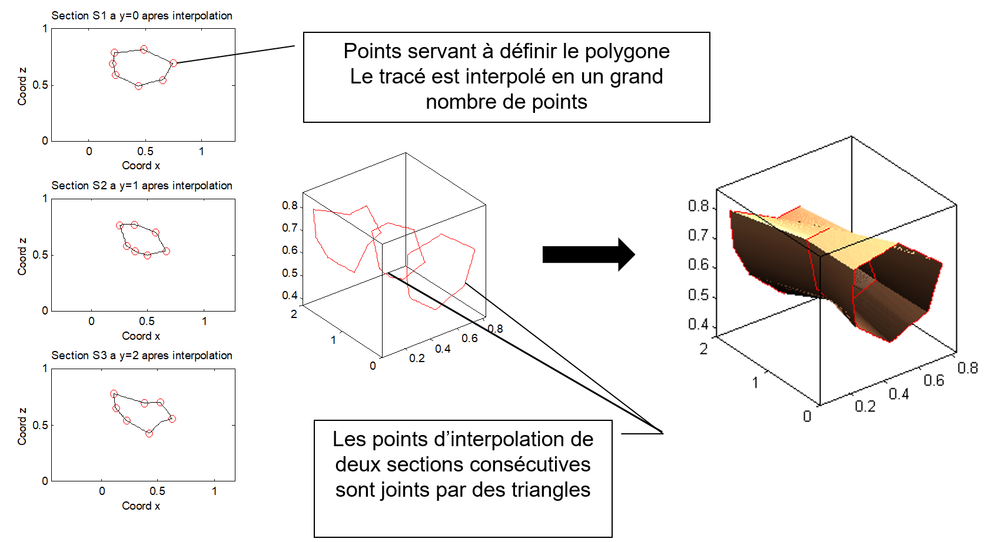
Étape 4 : Intersection avec le modèle de blocs
On détermine si chaque bloc est à l’intérieur ou à l’extérieur du solide formé. On calcule la moyenne des blocs intérieurs au solide. Chaque bloc peut comporter une estimation de la teneur seule (si la densité est constante) ou une estimation conjointe de la teneur et de la densité.
Méthodes « manuelles » : estimation entre deux sections
Lorsque l’on ne dispose pas d’un logiciel de modélisation 3D, on peut obtenir des estimations approximatives en calculant la teneur moyenne et le volume entre chaque paire de sections consécutives. On note :
- \(S_1\), \(S_2\) : surfaces minéralisées des deux sections;
- \(t_1\), \(t_2\) : teneurs moyennes sur chaque section;
- \(L\) : distance entre les deux sections.
Deux hypothèses sont possibles pour la variation de la teneur entre les sections :
- Changement brusque : la teneur \(t_1\) s’applique à la première moitié du volume (de la section 1 jusqu’à la mi-distance) et \(t_2\) à la seconde moitié.
- Changement graduel (linéaire) : la teneur varie linéairement entre \(t_1\) et \(t_2\).
De même, pour le calcul du volume, trois hypothèses géométriques sont courantes :
- Surface linéaire : la surface de la section varie linéairement de \(S_1\) à \(S_2\).
- Cône tronqué : la section est circulaire et le rayon varie linéairement.
- Obélisque : la section est rectangulaire (\(a_i \times b_i\)) et les côtés varient linéairement.
Formules entre deux sections
Le tableau suivant présente les formules classiques de volume et de teneur moyenne pour les combinaisons les plus courantes. La densité est supposée constante. Les trois hypothèses géométriques sont illustrées à la Figure 5.13.
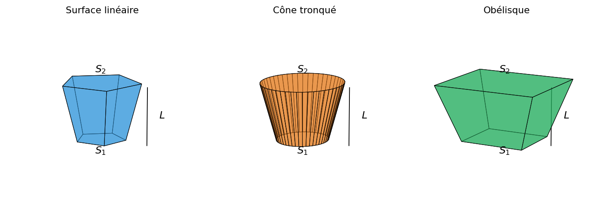
Ici, B désigne une teneur variant de façon brusque entre les sections et L une variation linéaire; pour l’obélisque, \(S_i = a_i \times b_i\).
| Méthode (volume) | Teneur | Volume | Teneur moyenne \(\bar t\) |
|---|---|---|---|
| Surface brusque | B | \(\dfrac{(S_1+S_2)\,L}{2}\) | \(\dfrac{S_1 t_1 + S_2 t_2}{S_1+S_2}\) |
| Surface lin. | B | \(\dfrac{(S_1+S_2)\,L}{2}\) | \(\dfrac{(3S_1+S_2)\,t_1+(3S_2+S_1)\,t_2}{4\,[S_1+S_2]}\) |
| Surface lin. | L | \(\dfrac{(2S_1+S_2)\,t_1+(2S_2+S_1)\,t_2}{3\,[S_1+S_2]}\) | |
| Cône tronqué | B | \(\dfrac{(S_1+S_2+\sqrt{S_1S_2})\,L}{3}\) | \(\dfrac{(7S_1+S_2+4\sqrt{S_1S_2})\,t_1+(7S_2+S_1+4\sqrt{S_1S_2})\,t_2}{8\,[S_1+S_2+\sqrt{S_1S_2}]}\) |
| Cône tronqué | L | \(\dfrac{(3S_1+S_2+2\sqrt{S_1S_2})\,t_1+(3S_2+S_1+2\sqrt{S_1S_2})\,t_2}{4\,[S_1+S_2+\sqrt{S_1S_2}]}\) | |
| Obélisque | B | \(\dfrac{(2S_1+2S_2+a_1b_2+a_2b_1)\,L}{6}\) | \(\dfrac{a_1b_1(7t_1+t_2)+(2t_1+2t_2)(a_2b_1+a_1b_2)+a_2b_2(t_1+7t_2)}{8a_1b_1+8a_2b_2+4a_1b_2+4a_2b_1}\) |
| Obélisque | L | \(\dfrac{a_1b_1(3t_1+t_2)+(t_1+t_2)(a_2b_1+a_1b_2)+a_2b_2(t_1+3t_2)}{4a_1b_1+4a_2b_2+2a_1b_2+2a_2b_1}\) |
Remarque. En pratique, les méthodes les plus utilisées sont : (1) surface linéaire avec teneur brusque, (2) surface linéaire avec teneur linéaire, et (3) cône tronqué avec teneur brusque. Les formules de l’obélisque sont rarement utilisées car elles nécessitent de connaître les dimensions individuelles des sections, au-delà de leur seule surface.
Exemple numérique
Données : \(S_1 = 600\;\text{m}^2\), \(S_2 = 1\,200\;\text{m}^2\), \(t_1 = 2\,\%\;\text{Cu}\), \(t_2 = 4\,\%\;\text{Cu}\), \(L = 20\;\text{m}\).
Pour l’obélisque : \(a_1 = 30\;\text{m}\), \(b_1 = 20\;\text{m}\), \(a_2 = 40\;\text{m}\), \(b_2 = 30\;\text{m}\).
| Méthode | Volume (× 10³ m³) | Teneur moyenne (%) |
|---|---|---|
| Surface brusque | 18,00 | 3,33 |
| Surface lin., teneur linéaire | 18,00 | 3,11 |
| Cône tronqué, teneur brusque | 17,66 | 3,17 |
| Cône tronqué, teneur linéaire | 17,66 | 3,11 |
| Obélisque, teneur brusque | 17,67 | 3,17 |
| Obélisque, teneur linéaire | 17,67 | 3,11 |
Observations :
- La différence la plus importante entre les estimés de teneur provient de l’hypothèse de changement brusque (3,33 %) versus graduel (3,11 %) de la teneur. L’écart entre les hypothèses géométriques de volume (surface linéaire, cône, obélisque) est secondaire.
- Les volumes diffèrent légèrement entre les méthodes (de 17,66 à 18,00 × 10³ m³), mais l’impact sur la teneur moyenne est faible.
- En pratique, le choix entre ces formules a moins d’influence sur le résultat final que la qualité de la délimitation des surfaces minéralisées et le choix de la teneur de coupure.
Sections de bout
Les sections de bout (première et dernière) nécessitent un traitement particulier, car il n’y a pas de section voisine d’un côté. On peut :
- Prolonger la section de bout sur une demi-distance vers l’extérieur (hypothèse conservatrice).
- Fermer le solide en un point (volume du cône).
- Utiliser une distance d’extrapolation basée sur les connaissances géologiques.
🧮 Atelier interactif 5.4 — Modèle de blocs vs approximation par formes
Deux vues 3D synchronisées : faire pivoter l’une fait pivoter l’autre (cliquez-glissez, molette pour zoomer). À gauche, le modèle de blocs réaliste : les teneurs proviennent d’un vrai champ gaussien log-normal (simulé par FFT-MA, comme dans les autres sections du livre), dont la moyenne locale suit une transition graduelle de \(t_1\) vers \(t_2\). C’est la « réalité » de référence : son volume et sa teneur moyenne s’obtiennent par comptage des blocs. À droite, la même enveloppe est approximée par les formules, qui résument la transition de façon brusque (marche) ou linéaire (rampe) et le volume par surface linéaire ou cône tronqué. L’écart entre la réalité et l’approximation, affiché en pourcentage, montre la différence d’hypothèse et de teneur calculée. Le bouton « Nouveau champ » tire une autre réalisation; ajustez aussi les surfaces, les teneurs, la distance, la forme et la taille des blocs. La taille des blocs étant fixe, augmenter la distance \(L\) ou la section augmente automatiquement leur nombre, comme dans un vrai modèle de blocs.